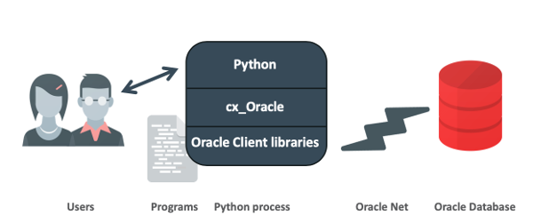

这里简单总结一下Python操作Oracle数据库这方面的相关知识。只是简单的整理一下之前的实验和笔记。这里的测试服务器为CentOS Linux release 7.5. 个人实验、测试、采集数据的一台机器。
这里简单介绍一下cx_Oracle，下面一段内容摘自cx_Oracle的作者（Anthony Tuininga ）的一篇博文，详情参考https://www.oracle.com/technetwork/cn/topics/tuininga-cx-oracle-086962-zhs.html
cx_Oracle是一个Python 扩展模块，通过使用所有数据库访问模块通用的数据库 API来实现 Oracle 数据库的查询和更新。为使用一些专为 Oracle 设计的特性，还加入了多个通用数据库 API 的扩展。cx_Oracle 的开发历时十多年，涵盖了大多数需要在 Python 中访问 Oracle 的客户的需求。2008 年 12 月，一个新的主要版本解决了早期版本的众多限制，并增添了对 Python 3.0 和 Oracle 新推出的一些特性的支持。
cx_Oracle的官方文档：https://cx-oracle.readthedocs.io/en/latest/# 官方文档从架构、特征方面介绍了cx_Oracle，简单摘录如下所示：
Python programs call cx_Oracle functions. Internally cx_Oracle dynamically loads Oracle Client libraries to access Oracle Database.

Fig. 1 cx_Oracle Architecture
cx_Oracle is typically installed from PyPI using pip. The Oracle Client libraries need to be installed separately. The libraries can be obtained from an installation of Oracle Instant Client, from a full Oracle Client installation, or even from an Oracle Database installation (if Python is running on the same machine as the database).
The cx_Oracle feature highlights are:
下面介绍安装cx_Oracle，cx_Oracle组件有多种安装方式，实在想不出不用pip安装的理由，因为它实在太简单、方便了！
pip install cx_Oracle
[root@db-server ~]# pip install cx_Oracle
Collecting cx_Oracle
Downloading https://files.pythonhosted.org/packages/ff/95/6c50d13da95de3e438e7d333dbd7b0946a0981c778e8153c73061b018a33/cx_Oracle-7.2.3-cp36-cp36m-manylinux1_x86_64.whl (731kB)
|████████████████████████████████| 737kB 295kB/s
Installing collected packages: cx-Oracle
Successfully installed cx-Oracle-7.2.3
安装成功后，测试验证
[root@db-server ~]# python
Python 3.6.6 (default, Sep 20 2019, 08:20:38)
[GCC 4.8.5 20150623 (Red Hat 4.8.5-39)] on linux
Type "help", "copyright", "credits" or "license" for more information.
>>> import cx_Oracle
>>>
这里我们打算安装Oracle Instant Client，可以去下面官方网址选择正确的、所需的版本。本次实验，我选择了instantclient-basic-linux.x64-11.2.0.4.0.zip
https://www.oracle.com/database/technologies/instant-client/downloads.html
https://www.oracle.com/database/technologies/instant-client/linux-x86-64-downloads.html
这里下载的Oracle Instant Client Zip，安装过程简单如下：
mkdir -p /opt/oracle
cd /opt/oracle/
mv instantclient-basic-linux.x64-11.2.0.4.0.zip /opt/oracle/
unzip instantclient-basic-linux.x64-11.2.0.4.0.zip
yum install libaio
注意：这个不是必须的，有些情况下会遇到这个错误。
sudo sh -c "echo /opt/oracle/instantclient_11_2 > /etc/ld.so.conf.d/oracle-instantclient.conf"
sudo ldconfig #
或者将环境变量LD_LIBRARY_PATH设置为Instant Client版本的相应目录。
# echo $LD_LIBRARY_PATH
/usr/local/hadoop/lib/native
在/etc/profile中加入
export LD_LIBRARY_PATH=/opt/oracle/instantclient_11_2:$LD_LIBRARY_PATH
# source /etc/profile
# echo $LD_LIBRARY_PATH
/opt/oracle/instantclient_11_2:/usr/local/hadoop/lib/native
mkdir -p /opt/oracle/instantclient_11_2/network/admin
其它平台的安装（或者RPM安装）， 官方文档https://oracle.github.io/odpi/doc/installation.html#linux 有详细介绍，这里就不画蛇添足。 RPM的安装也很简单，如下所示
#rpm -ivh oracle-instantclient19.3-basic-19.3.0.0.0-1.x86_64.rpm
Preparing... ########################################### [100%]
1:oracle-instantclient19.########################################### [100%]
需要注意的是，安装是必须版本一致：cx_Oracle、Oracle Client、Python最好一致，否则就会出现很多问题，例如下面这些（学习、测试中遇到的错误）
- 1：cx_Oracle 报错：cx_Oracle.DatabaseError: DPI-1050: Oracle Client library must be at version 11.2
- 2：cx_Oracle.DatabaseError: DPI-1047: Cannot locate a 64-bit Oracle Client library: "/lib64/libc.so.6: version `GLIBC_2.14' not found (required by /usr/lib/oracle/19.3/client64/lib/libclntsh.so)". See https://oracle.github.io/odpi/doc/installation.html#linux for help
cx_Oracle连接ORACLE数据库的连接字符串（Connection Strings）有多种方式，下面简单整理一下:
首先，我们可以看看cx_Oracle.connect这个函数的参数如下：
cx_Oracle.connect(user=None, password=None, dsn=None, mode=cx_Oracle.DEFAULT_AUTH, handle=0, pool=None, threaded=False, events=False, cclass=None, purity=cx_Oracle.ATTR_PURITY_DEFAULT, newpassword=None, encoding=None, nencoding=None, edition=None, appcontext=[], tag=None, matchanytag=None, shardingkey=[], supershardingkey=[])
参数看起来相当多，眼花缭乱的。不过没有关系，其实你用到的不多，很多参数基本上可以选择性忽略。比较常用的基本上有下面几个：
user 用户名
password 密码
dsn dsn
encoding 编码
dbhost.example.com是机器名，也可以数据库服务器IP地址，orclpdb1是service names, 注意，这种方式不能使用早期的SID
import cx_Oracle
# Obtain password string from a user prompt or environment variable
userpwd = ". . ."
connection = cx_Oracle.connect(username, userpwd, "dbhost.example.com/orclpdb1", encoding="UTF-8")
如果数据库不是默认的端口号，那么需要在连接字符串中指定端口号，如下所示：
connection = cx_Oracle.connect(username, userpwd, "dbhost.example.com:1984/orclpdb1",
encoding="UTF-8")
介绍这种连接字符串方式前，我们必须先了解一下函数makedns,它的功能是创建一个dns对象， 如下所示：
cx_Oracle.makedns
( host
, port
, sid=None
, service_name=None
, region=None
, sharding_key=None
, super_sharding_key=None)
dsn = cx_Oracle.makedsn("dbhost.example.com", 1521, service_name="orclpdb1")
connection = cx_Oracle.connect(username, userpwd, dsn, encoding="UTF-8")
另外，你也可以用创建类似的连接描述符字符串，如下所示：
dsn = """(DESCRIPTION=
(FAILOVER=on)
(ADDRESS_LIST=
(ADDRESS=(PROTOCOL=tcp)(HOST=sales1-svr)(PORT=1521))
(ADDRESS=(PROTOCOL=tcp)(HOST=sales2-svr)(PORT=1521)))
(CONNECT_DATA=(SERVICE_NAME=sales.example.com)))"""
connection = cx_Oracle.connect(username, userpwd, dsn, encoding="UTF-8")
这种连接字符串方式就不用多介绍了，基本上学习ORACLE的入门的时候，就已经了解了这方面的知识点
MyDB =
(DESCRIPTION =
(ADDRESS = (PROTOCOL = TCP)(HOST = xxxxx)(PORT = 1521))
(CONNECT_DATA =
(SERVER = DEDICATED)
(SERVICE_NAME = orclpdb1)
)
)
connection = cx_Oracle.connect(username, userpwd, "MyDB", encoding="UTF-8")
cx_Oracle连接字符串语法与Java JDBC和通用Oracle SQL Developer语法不同,一般JDBC的连接字符串如下：
jdbc:oracle:thin:@hostname:port/service_name、
cx_Oracle的方式如下：
connection = cx_Oracle.connect("hr", userpwd, "dbhost.example.com:1521/orclpdb1", encoding="UTF-8")
用户名/密码@Oracle服务器IP/Oracle的SERVICE_NAME")
db_conn=cx_Oracle.connect('test/test123456@10.20.57.24/GSP')
下面简单介绍一下使用cx_Oracle操作数据库的一些简单例子
import cx_Oracle
db_conn=cx_Oracle.connect('test/test123456@10.20.57.24/gsp.localdomain')
db_cursor=db_conn.cursor()
sql_cmd='SELECT * FROM TEST.TEST'
db_cursor.execute(sql_cmd)
for row in db_cursor:
print(row)
db_cursor.close()
db_conn.close()
注意事项：SQL语句里面不能加上分号（;)这类结束符，否则就会报 ORA-00911: invalid character错误：
如果上面SQL脚本里面多了一个分号，就会出现下面错误：
sql_cmd='SELECT * FROM TEST.TEST;'
[root@MyDB python]# python orace_select.py
Traceback (most recent call last):
File "orace_select.py", line 8, in <module>
db_cursor.execute(sql_cmd)
cx_Oracle.DatabaseError: ORA-00911: invalid character
import cx_Oracle
db_conn=cx_Oracle.connect("test", "test123456", "10.20.57.24/gsp.localdomain",encoding="UTF-8")
db_cursor=db_conn.cursor()
sql_cmd='SELECT * FROM TEST WHERE ID=:ID'
sql_p_id={'ID':100}
db_cursor.execute(sql_cmd,sql_p_id)
for row in db_cursor:
print(row)
db_cursor.close()
db_conn.close()
如果要获取多行记录，可以使用fetchall函数。不用使用
import cx_Oracle
db_conn=cx_Oracle.connect("test", "test123456", "10.20.57.24/gsp.localdomain",encoding="UTF-8")
db_cursor=db_conn.cursor()
sql_cmd='SELECT * FROM TEST WHERE ID=:ID'
sql_p_id={'ID':100}
db_cursor.execute(sql_cmd,sql_p_id)
db_records= db_cursor.fetchall()
print(db_records)
db_cursor.close()
db_conn.close()
ORACLE的DML
其实对于INSERT、DELETE、UPDATE的操作，基本上差不很多。下面简单简单举了一个UPDATE例子，没有从细节和分类（UPDATE、INSERT、DELETE）展开。
#-*- coding: utf-8 -*-
import cx_Oracle
db_conn=cx_Oracle.connect("test", "test123456", "10.20.57.24/gsp.localdomain",encoding="UTF-8")
db_cursor = db_conn.cursor()
sql_cmd = 'INSERT INTO TEST.TEST(OWNER,OBJECT_ID,OBJECT_NAME)' \
'VALUES(:OWNER, :OBJECT_ID, :OBJECT_NAME)'
db_cursor.execute(sql_cmd, ('TEST', 1, 'KERRY1'))
db_cursor.execute(sql_cmd, ('TEST', 2, 'KERRY2'))
db_conn.commit()
db_cursor.close()
db_conn.close()
注意，如果是插入多行记录，你使用execute就会报如下错误：
cx_Oracle.NotSupportedError: Python value of type tuple not supported.
#-*- coding: utf-8 -*-
import cx_Oracle
db_conn=cx_Oracle.connect("test", "test123456", "10.20.57.24/gsp.localdomain",encoding="UTF-8")
db_cursor = db_conn.cursor()
sql_cmd = 'INSERT INTO TEST.TEST(OWNER,OBJECT_ID,OBJECT_NAME)' \
'VALUES(:1, :2, :3)'
insert_record=[('TEST', 1, 'KERRY1'),('TEST', 2, 'KERRY2'),('TEST', 3, 'KERRY3')]
db_cursor.bindarraysize =3
db_cursor.setinputsizes(30,int, 30)
#db_cursor.execute(sql_cmd, ('TEST', 1, 'KERRY1'))
#db_cursor.execute(sql_cmd, ('TEST', 2, 'KERRY2'))
db_cursor.execute(sql_cmd, insert_record)
db_conn.commit()
db_cursor.close()
db_conn.close()
正确的做法是使用executemany：
#-*- coding: utf-8 -*-
import cx_Oracle
db_conn=cx_Oracle.connect("test", "test123456", "10.20.57.24/gsp.localdomain",encoding="UTF-8")
db_cursor = db_conn.cursor()
sql_cmd = 'INSERT INTO TEST.TEST(OWNER,OBJECT_ID,OBJECT_NAME)' \
'VALUES(:1, :2, :3)'
insert_record=[('TEST', 1, 'KERRY1'),('TEST', 2, 'KERRY2'),('TEST', 3, 'KERRY3')]
db_cursor.bindarraysize =3
db_cursor.setinputsizes(30,int, 30)
db_cursor.executemany(sql_cmd, insert_record)
db_conn.commit()
db_cursor.close()
db_conn.close()
个人在总结的时候，发现官方文档https://cx-oracle.readthedocs.io/en/latest/user_guide/sql_execution.html里面的例子实在是太详细了，这里完全没有必要画蛇添足。
https://cx-oracle.readthedocs.io/en/latest/index.html
https://github.com/oracle/python-cx_Oracle/tree/master/samples
https://blogs.oracle.com/oraclemagazine/perform-basic-crud-operations-using-cx-oracle-part-1
https://www.oracle.com/technetwork/articles/dsl/prez-python-queries-101587.html